From the Field: Accelerate Your Development for Microsoft Marketplace
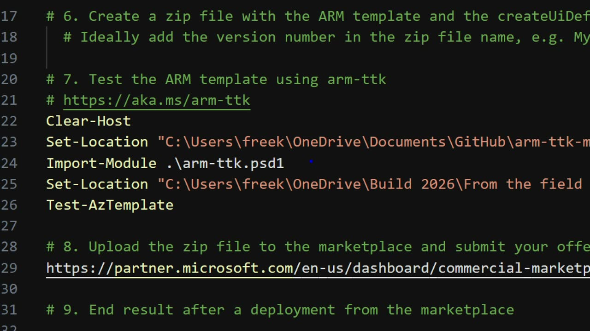
Official description
Gain practical insights and proven strategies for your development journey for Microsoft Marketplace. Streamline your solutions' development, packaging, and deployment while ensuring compliance with Microsoft’s requirements. Discover common pitfalls, best practices, and automation techniques to reduce time-to-market. Whether you're new to developing for the Microsoft Marketplace or looking to optimize your approach, this session delivers real-world guidance to help you develop and publish efficiently.
Summary
Overview
A practical walkthrough of publishing infrastructure-as-code solutions to the Microsoft Marketplace (formerly Azure Marketplace) via the Azure Application offer. The session traces the full journey from authoring a Bicep template through transpiling to ARM, designing the purchase UI, validating with the ARM Test Toolkit, and publishing through Partner Center to a customer's deployed managed application.
Key announcements
- The Azure Marketplace is now the Microsoft Marketplace — the rebranded marketplace serves ISVs (visibility and go-to-market support), partners (private offer selling and reselling), and end customers (ease of deployment and Azure consumption commitment credit). [00:00:35
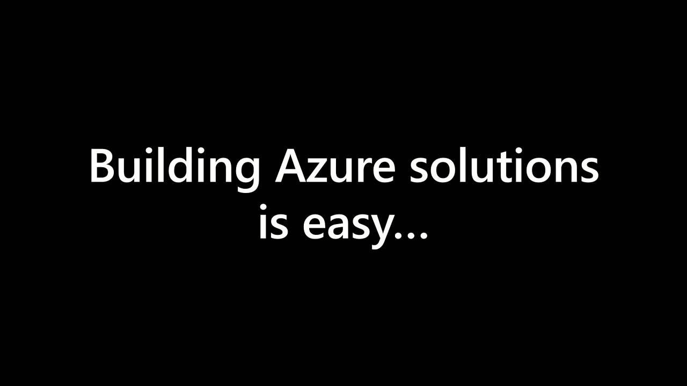
m05s m10s
m10s p05sp10s]
p05sp10s] - Bicep visual designer in the VS Code Bicep extension — an experimental feature accessed by right-clicking a Bicep file to get an interactive, exportable graphical overview of declared resources. [00:06:09
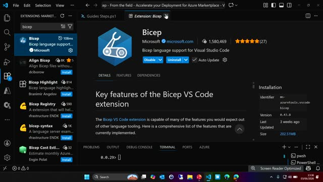
m05s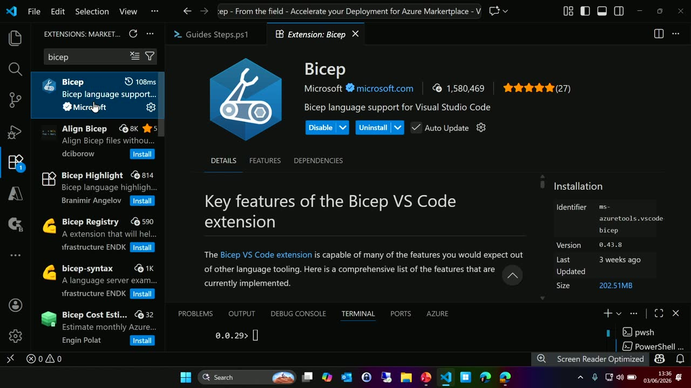
m10s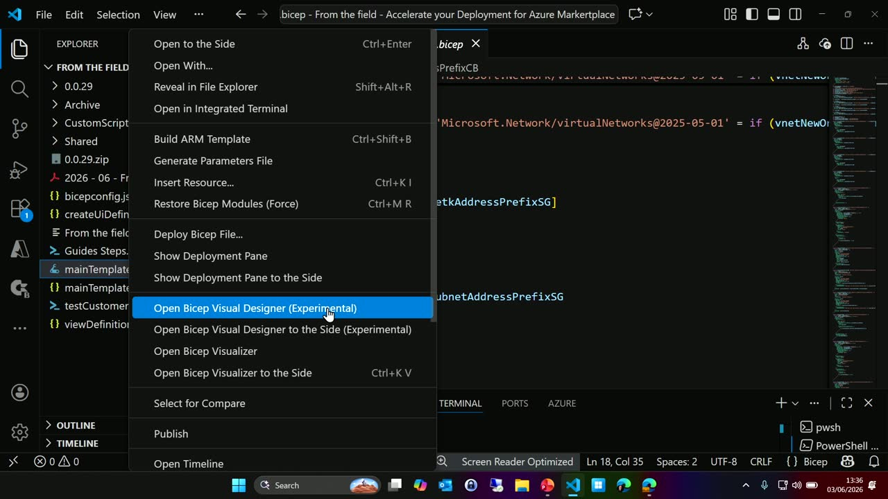
p05s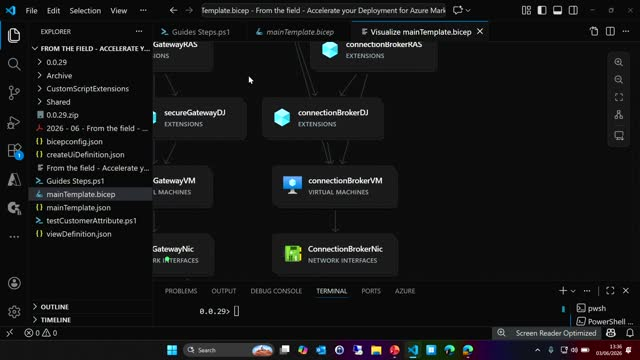
p10s] - ARM Test Toolkit (ARM TTK) runs 49 validation tests — the same tests Microsoft runs on upload, so running them locally first prevents failed upload cycles. [00:12:53
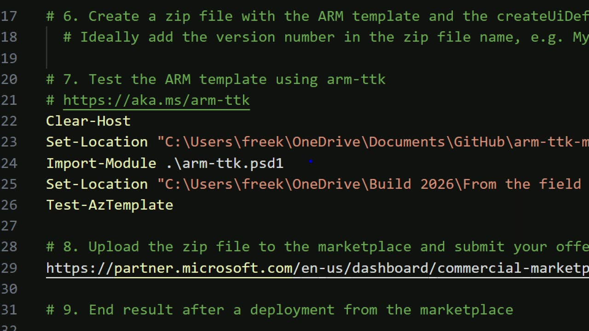
m05sm10s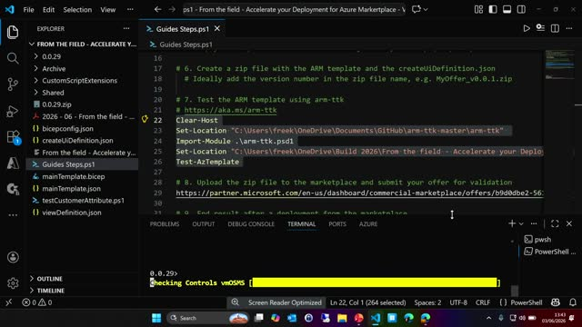
p05s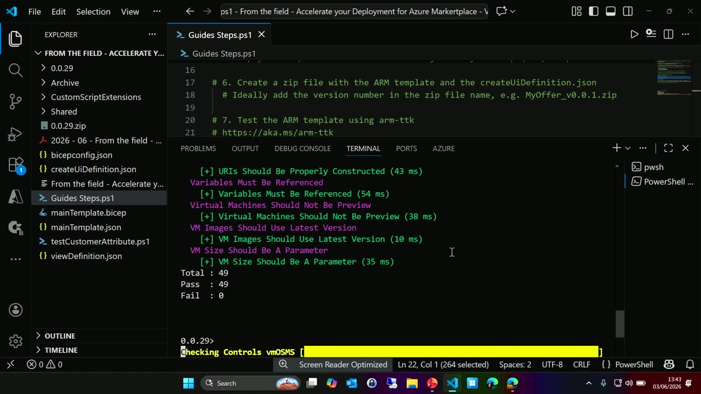
p10s]
{kind=link}
{kind=link}
{kind=link}
{kind=link}
{kind=link}
{kind=link}
{kind=link}
{kind=link}
{kind=link}
{kind=link}
Topics covered
- The Azure Application offer structure: a single offer containing multiple plans (e.g. silver, gold, platinum), each deploying a managed application plus a managed resource group (MRG) into the customer's subscription.
- The offer as a technical artifact: a zip file holding up to four files — mainTemplate.json (ARM) and createUiDefinition.json (mandatory), plus viewDefinition and optional deployment scripts.
- Authoring resources in Bicep and transpiling to ARM via
bicep buildor right-click build, with a side-by-side comparison arguing Bicep is cleaner than ARM's bracket/syntax overhead. - Performing a test deployment to a test resource group before any marketplace work.
- Designing the portal purchase UX in the createUiDefinition sandbox environment, including previewing elements like VM sizes, passwords, storage accounts, and networks.
- One-to-one, case-sensitive mapping between createUiDefinition
outputsand ARM/Bicep template parameters (e.g. local admin user). - Partner Center technical configuration: zip upload, version naming, incremental vs. complete deployment mode, notification endpoint URL for purchase/cancel/upgrade events, and MRG access permissions for publisher and customer.
- Inspecting the deployed result: the no-cost managed application collecting billing/telemetry, the linked MRG holding VMs, load balancers, and key vaults, and nested deployments (including an ISV ID deployment for partner credit).
Notable quotes
"I want to kick us off with a bold statement saying that I believe that building Azure solutions today is easy... but shipping something to customers in a way that they able to trust it and to deploy it at scale, that is where it becomes challenging."
"Even though the marketplace doesn't support bicep, I strongly advise you to start with bicep and then simply transpile into arm templates. So I'm a Bicep fan in case you didn't know this."
"Do not upload that ZIP file before you see the 49 results in a successful state."
Products and tools mentioned
- Microsoft Marketplace (formerly Azure Marketplace)
- Azure Application offer
- Azure managed application / managed resource group (MRG)
- Bicep
- ARM templates
- Visual Studio Code
- VS Code Bicep extension (with visual designer)
- createUiDefinition
- ARM Test Toolkit (ARM TTK)
- Partner Center
- GitHub Copilot
- GitHub
Speakers featured
- Freek Berson — Microsoft MVP, based in the Netherlands, works for an ISV; author of a book on Bicep. [inferred] (captioned as "Craig Berson")
Follow-up resources
- Session code published on the Microsoft-provided GitHub, accessible via a QR code shared at the end of the session.
Frames
{kind=link}
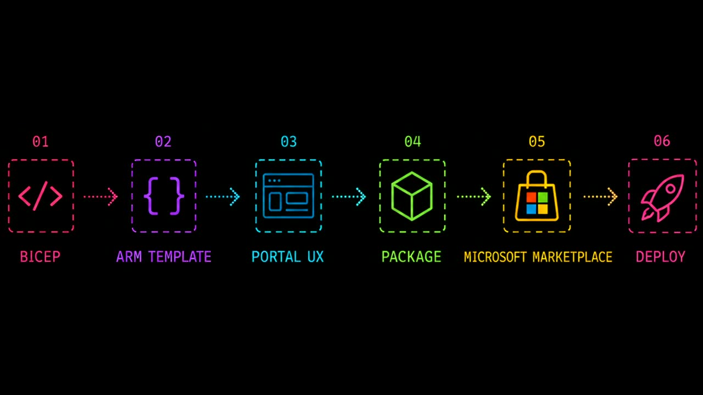
{kind=link}
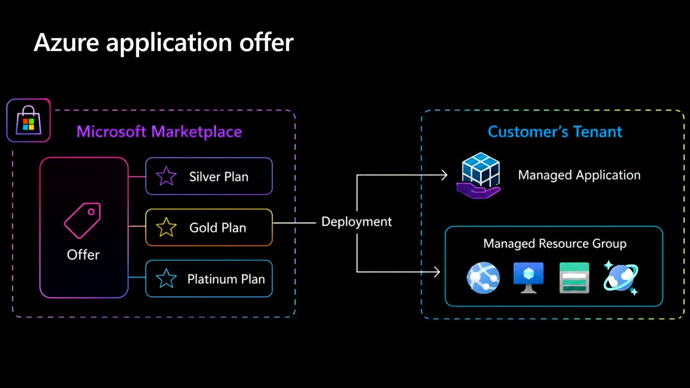
{kind=link}
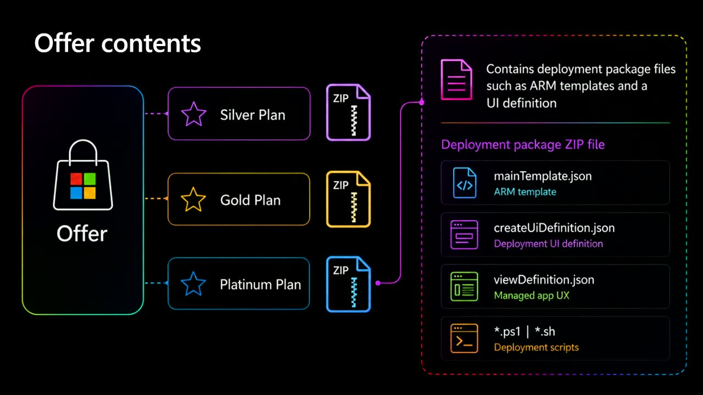
{kind=link}
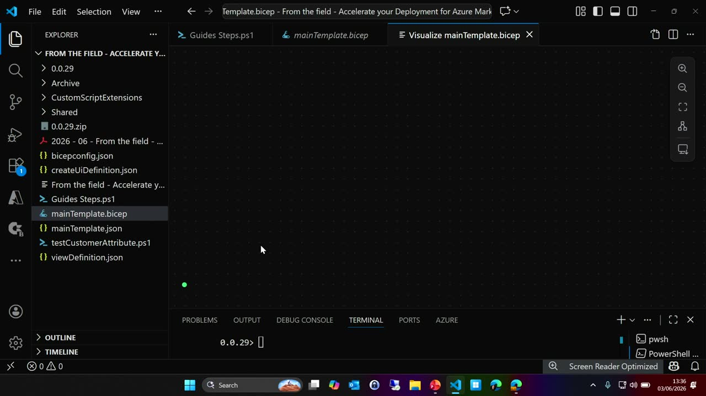
{kind=link}
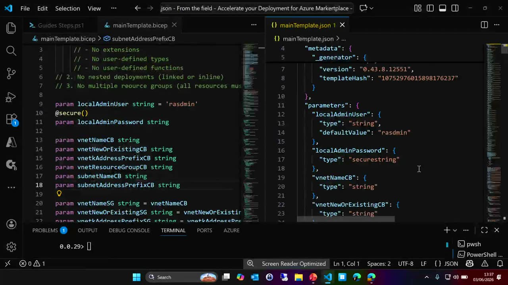
{kind=link}
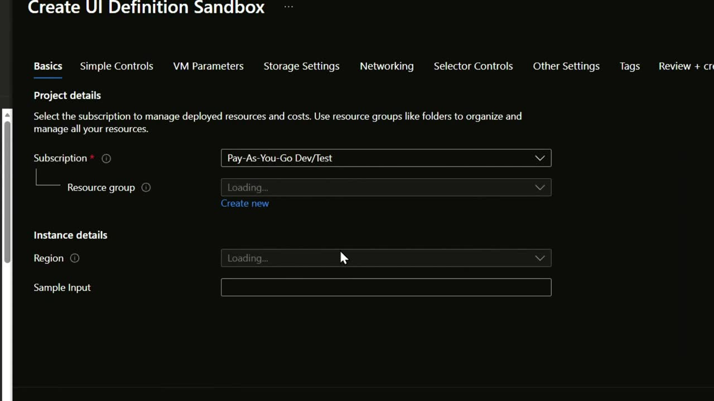
{kind=link}
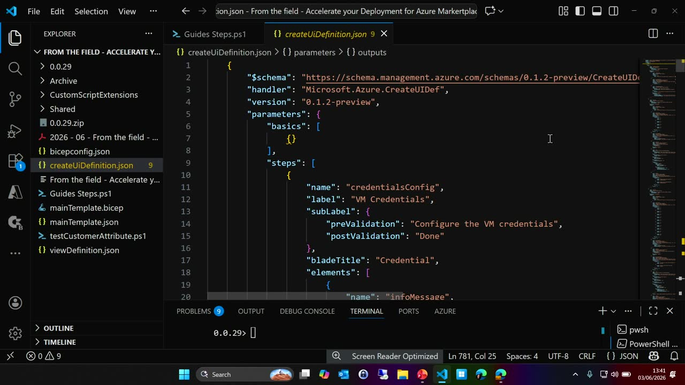
{kind=link}
{kind=link}
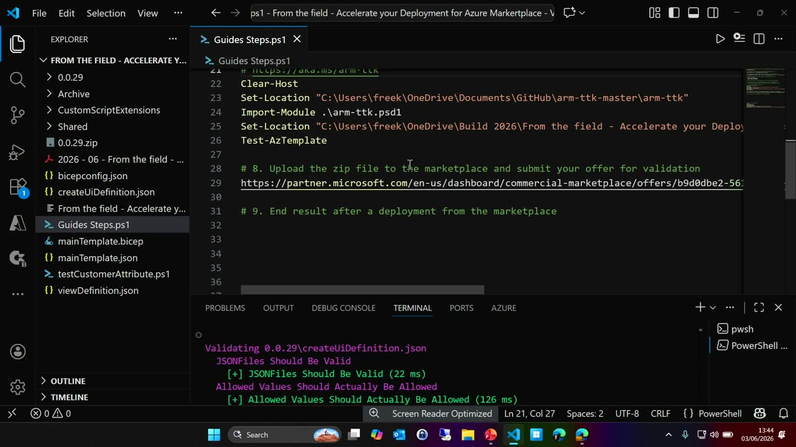
{kind=link}
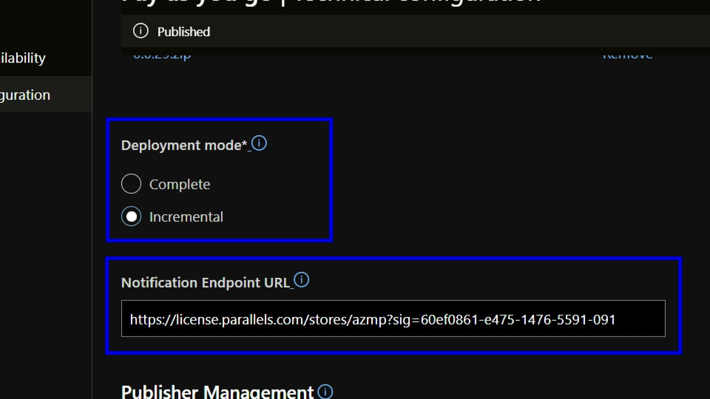
{kind=link}
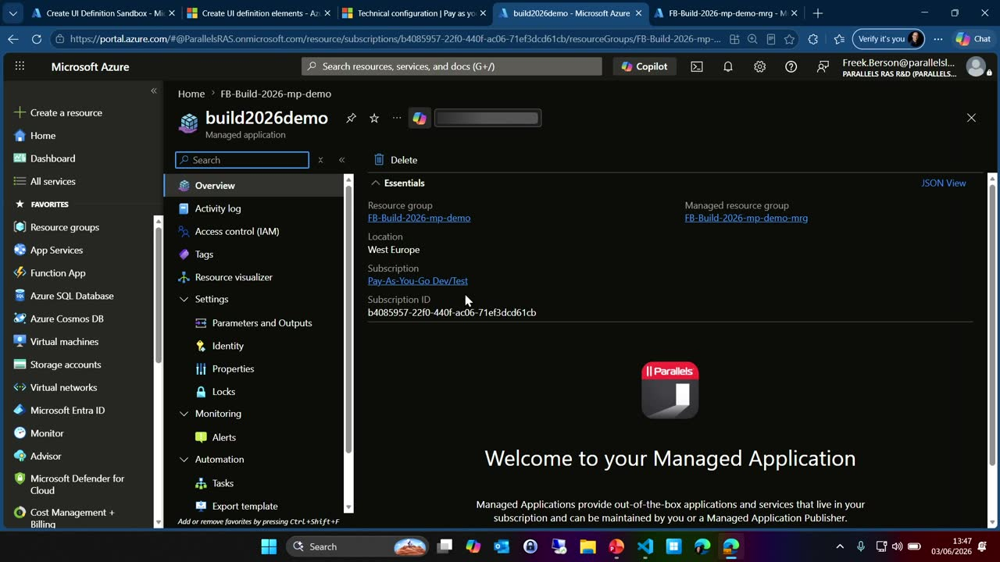
{kind=link}
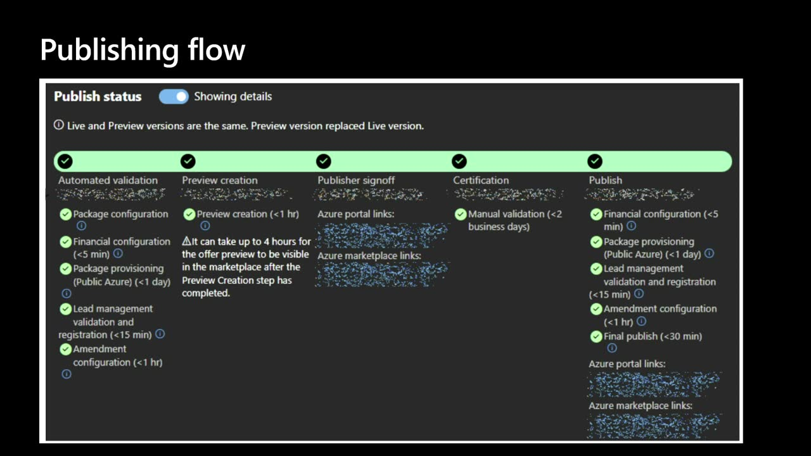


{kind=link}
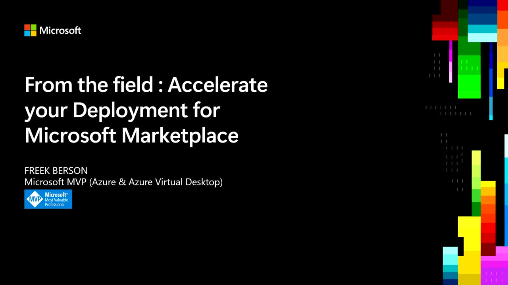
Transcript
Show / hide transcript (26,948 chars)
[00:00:02] OK, that's better. [00:00:04] Good afternoon everyone. [00:00:05] Thank you so much for for joining. [00:00:08] I want to kick us off with a bold statement [00:00:11] saying that I believe that building Azure solutions today is [00:00:15] easy. [00:00:16] And the reason I say that is that we have [00:00:19] GitHub Copilot, available AI solutions, available templates and all those [00:00:23] great cloud automation technologies, but shipping something to customers in [00:00:28] a way that they able to trust it and to [00:00:31] deploy it at scale, that is where it becomes challenging. [00:00:35] So and that's also where the Azure Marketplace, or as [00:00:38] it now called, the Microsoft Marketplace comes in very handy. [00:00:42] So in this session, we're going to take a look [00:00:44] at taking your infrastructures code templates and transforming those into [00:00:48] products through the Azure Marketplace. [00:00:51] So my name is Craig Berson. [00:00:52] I'm a Microsoft MVP. [00:00:53] I'm based in the Netherlands, and I enjoy sharing knowledge [00:00:57] about Azure and Azure infrastructures code and the Microsoft Marketplace [00:01:01] to help you deploy resources in a faster and more [00:01:04] efficient way. [00:01:06] So let's dive right in. [00:01:08] And this is going to be the journey that we'll [00:01:10] take in this session. [00:01:11] So we're going to start by creating that BICEP template [00:01:14] and defining the resources we want to create. [00:01:17] But then we're going to see how and why we [00:01:20] need to transpile that into an ARM template, and we'll [00:01:23] talk about the portal UX as well. [00:01:25] So how to design the portal experience when someone purchases [00:01:28] your product through the Microsoft Marketplace. [00:01:31] We're then going to package the solution, upload it to [00:01:34] the Microsoft Marketplace, and actually see it get deployed and [00:01:37] get used as well. [00:01:38] So that's going to be the goal of this session [00:01:41] to get you from 1:00 to 6:00 in the air. [00:01:46] But I really want to start by explaining a little [00:01:49] bit why as your marketplace and don't worry, this is [00:01:52] not a marketing slide, but I actually work for an [00:01:54] ISV. [00:01:55] We use the marketplace and I think that the marketplace [00:01:57] is beneficial for all parties that are involved. [00:02:00] So if you are an ISV, the marketplace is going [00:02:03] to help you get visibility and get go to market [00:02:05] support for your solution. [00:02:08] If you are a partner able to use the marketplace [00:02:10] to sell and resell private offers to your customers, I [00:02:14] would have simplified selling experience as well. [00:02:17] And then lastly, if you are an end customer consuming [00:02:20] something from the marketplace, you get benefits like the ease [00:02:23] of deployment. [00:02:24] We'll see that in action as well. [00:02:26] And it also commits to your Microsoft Azure consumption commitment, [00:02:29] which is an agreement you might have on the certain [00:02:31] spend that you do in Azure. [00:02:33] So just a little bit on the why. [00:02:36] So diving into the technology, we're going to focus on [00:02:39] one specific offer. [00:02:41] And the reason is that I cannot possibly talk about [00:02:43] all of them in 25 minutes. [00:02:45] So I want to pick out one which I think [00:02:47] is really interesting, which is the Azure Application offer, which [00:02:51] allows you to transform templates into something that customers can [00:02:54] purchase and deploy with lots of flexibility and lots of [00:02:57] options, as we'll see in this session. [00:03:01] So if you're not familiar, before we dive into how [00:03:03] to actually do this, this is what the Azure Application [00:03:06] offer looks like. [00:03:08] So on the left hand side, we have the Microsoft [00:03:10] Marketplace where you have a single offer with different plans [00:03:14] in it. [00:03:15] And each plan could be silver, gold, platinum, whatever name [00:03:19] you decide. [00:03:20] But every plan is going to deploy two different resources [00:03:23] in the Azure subscription of the customer. [00:03:26] One is called a managed application, which is just like [00:03:29] any other Azure resource. [00:03:31] You don't pay for it. [00:03:32] It just collects telemetry information about the deployment that you [00:03:35] have done. [00:03:36] And it is connected to what we call a managed [00:03:39] resource group or short MRG. [00:03:41] And that is where all of the resources that you [00:03:43] decide to deploy are going to end up in the [00:03:46] customer's subscription. [00:03:47] And those are also linked together as we'll see in [00:03:49] the demo. [00:03:51] So before we get to the demo, a little bit [00:03:54] deeper into what an actual offer is from a technical [00:03:57] standpoint, it is just a zip file. [00:04:00] And as interesting as that sounds, that is the whole [00:04:03] technical deployment that you're doing. [00:04:05] That's a lot more to it, like adding, you know, [00:04:07] images and videos and descriptions and things like that. [00:04:10] But from a technical perspective, it is just a zip [00:04:13] file containing a maximum of four files, and the two [00:04:16] first ones are the mandatory files. [00:04:18] So that's the main template dot Jason, which is the [00:04:21] Azure arm template, if you're familiar with that. [00:04:24] Note that this is not Bicep. [00:04:26] I will talk about why I still actually advise you [00:04:29] to do Bicep and how to get started with that [00:04:31] as well. [00:04:33] And they're just to create UI definition. [00:04:35] And then this allows you to define what the UI [00:04:37] looks like when someone purchases your product through through the [00:04:41] marketplace. [00:04:42] The other two, I won't focus on that a lot. [00:04:44] It's the view definition allowing you to add more metadata [00:04:47] to your deployment. [00:04:49] And if you need some deployment scripts along the way, [00:04:51] you can add them in the zip file as well. [00:04:53] But that's it. [00:04:54] So we're now going to take a look at how [00:04:56] to create those zip files and what the journey is [00:04:59] going to be like in a live demo. [00:05:03] So let me switch to VS Code before anyone else. [00:05:06] I'm going to share all of the code. [00:05:07] So at the end of the session, you'll get AQR [00:05:09] code to get access to all of this code as [00:05:11] well. [00:05:12] But the first step that you'll do is you'll start [00:05:14] to create the resources inside the main template file. [00:05:17] So this is where you define the resources, declare the [00:05:20] resources you want to create inside the customer's environment. [00:05:24] So let's take a look at what that looks like. [00:05:27] So this is that Bicep template, if you're familiar with [00:05:30] that, it contains a lot of parameters which allows us [00:05:33] to customize this to our deployments, to our needs. [00:05:36] But for a big part, it's all about declaring resources. [00:05:38] And whether that's virtual machines or SQL servers or Azure [00:05:42] Kubernetes clusters, whatever you're doing, that doesn't really matter. [00:05:47] So just a quick tip, if you're working with Bicep [00:05:50] inside VS Code, always make sure to install this Bicep [00:05:54] extension as well, which allows you to get code completion [00:05:58] a lot of benefits while you are offering these these [00:06:01] templates. [00:06:02] And one of the things that it also provides you, [00:06:05] and I quickly want to highlight that as well, is [00:06:08] a visualizer. [00:06:09] So you can basically right click any bicep file and [00:06:11] say open Bicep visual Designer, which is currently an experimental [00:06:15] feature, but it gives you this nice graphical overview of [00:06:19] all of the resources you are going to create. [00:06:22] It's also interactive. [00:06:23] So I can drag this around the way I want [00:06:25] to refer it back to the basics and also export [00:06:27] it, which is a new functionality. [00:06:29] It was added before in order to you to allow [00:06:31] it to use to create documentation and things like that. [00:06:34] So let's see Visualizer as part of the extension. [00:06:38] Now, I mentioned in the beginning that Bicep is not [00:06:40] supported as a native language for Azure Marketplace. [00:06:43] So we need to transpire this into an arm template [00:06:47] and how to do that? [00:06:49] That's the second step that we have right here. [00:06:52] One of the most easy ways is just running Arizona [00:06:54] bicep build and I'm pointing to the bicep file. [00:06:57] This will make sure that we transpile the bicep file [00:06:59] into an arm template. [00:07:01] The other way, which is also quite fast, it's just [00:07:04] right clicking any bicep file and saying build me my [00:07:07] arm template and that's it. [00:07:10] So once you do that, you get the bicep template [00:07:12] here on the left hand side. [00:07:14] And let's actually do a quick side by side comparison [00:07:18] to see the difference between these two files, and you'll [00:07:21] get an understanding of why I think that bicep is [00:07:24] the much more easy thing to use. [00:07:26] So this one here is clean code, right? [00:07:30] It is easy to read and to and to write [00:07:32] and to author. [00:07:33] Whereas an arm template has a lot of brackets and [00:07:36] semicolons and syntax overhead you'll want to avoid. [00:07:39] So even though the marketplace doesn't support bicep, I strongly [00:07:42] advise you to start with bicep and then simply transpile [00:07:46] into arm templates. [00:07:47] So I'm a Bicep fan in case you didn't know [00:07:50] this. [00:07:51] So once you have that arm template, let's go to [00:07:55] the next step, which sometimes is forgotten. [00:07:58] It seems quite obvious, but always make sure that you [00:08:01] do a test deployment prior to even touching anything for [00:08:04] the for the marketplace. [00:08:06] So deploy this into a test environment, test resource group [00:08:09] to confirm that the resources you are creating are actually [00:08:13] the resources that you are expecting. [00:08:16] So once you're happy with that, we could then move [00:08:19] to step #4 which is what we talked about in [00:08:22] the beginning, designing the UI experience. [00:08:25] So this is the UI experience that a user gets [00:08:27] or an admin gets who purchased your solution. [00:08:29] You've probably seen at this before in, for example, the [00:08:32] Azure portal with the different Wizards and the different steps. [00:08:35] That is what you design here. [00:08:37] So these two URLs, these are interesting to note. [00:08:40] It'll help you get the design up and running. [00:08:44] So let's take a look at one of those to [00:08:46] see it in action here. [00:08:50] So this is that sandbox environment. [00:08:51] And as the name implies, this allows you to sandbox [00:08:54] the UI and get an idea on how to create [00:08:56] that UI. [00:08:57] So there's a couple of options here. [00:08:58] What you can do is you can start with an [00:09:00] empty template. [00:09:01] If you want to start from scratch, you can demo [00:09:05] every element, but also do in storage account as the [00:09:08] example. [00:09:09] I like to do the demo environment as a first [00:09:12] step because it will give you an overview of all [00:09:14] of the components that you're able to use. [00:09:16] So if we do that, we can actually do a [00:09:18] preview here and I'll zoom in a little bit and [00:09:21] we can see that, you know, we can test drive [00:09:23] all of the elements. [00:09:24] So the different tabs, the different drop down lists and [00:09:28] options and things like that. [00:09:30] So also very specific things like VM sizes and passwords, [00:09:34] storage accounts and networks and you get the idea. [00:09:37] So this allows you to test drive and get an [00:09:40] idea of all of the elements that are possible. [00:09:44] What is also great is that once you have designed [00:09:48] your own UI experience, you can simply copy and paste [00:09:52] that from within your VS Code, go back here, paste [00:09:56] it, do a preview and get a preview of what [00:09:59] you have just designed. [00:10:01] So this is one of our solutions, doesn't really matter [00:10:03] what it is, but just to give you an idea [00:10:05] of how easy it is to test drive that into [00:10:07] a sandbox environment, work through the steps to see if [00:10:10] you're happy with the layout that you are creating. [00:10:14] So once you're happy with that layout and you have [00:10:19] created it, it is time for another step here, which [00:10:23] is actually really important. [00:10:26] It is mapping the output of the create UDI definition [00:10:30] to your bicep arm template. [00:10:33] And this is important because we're capturing parameters inside the [00:10:37] UI definition file. [00:10:38] You want to make sure that you sent those to [00:10:40] the arm template. [00:10:41] So those need to match one-on-one exactly. [00:10:44] And it is also case sensitive, so be very aware [00:10:47] of that. [00:10:48] So how does that work if we have the create [00:10:51] UI definition file here? [00:10:53] For a big file, I won't go through all of [00:10:55] it, but for a big part, this is all about [00:10:57] designing what the UI looks like. [00:10:59] So the different tabs, the different messages, the different options, [00:11:03] etcetera. [00:11:04] But all the way down in this file we have [00:11:08] the section called outputs, right? [00:11:11] And this allows me to make sure that the UI [00:11:14] definition also outputs the values that I want. [00:11:17] So for example, I have a local admin user here, [00:11:20] which is collected from the step credential config and then [00:11:24] called local admin. [00:11:25] So all of these outputs are also needed inside your [00:11:29] arm bicep template. [00:11:31] So how does it look like? [00:11:33] If you go back to Bicep, this is that parameter [00:11:36] list, right? [00:11:37] So as you can see, it's the exact same thing. [00:11:40] For example, here is that parameter for local admin user [00:11:43] as well. [00:11:44] So again, there needs to be a one-on-one mapping between [00:11:47] these sources. [00:11:50] So once you're happy with that and once you've created [00:11:53] that, it is now ready to to create that zip [00:11:56] file. [00:11:56] I'm not going to demo that. [00:11:57] I'm sure everyone is familiar on how to create a [00:11:59] zip file, but those those two files are going to [00:12:01] be added to it. [00:12:02] So that's the ARM template as well as the Create [00:12:05] UI definition. [00:12:07] The next step I can really then advise you to [00:12:11] do is use something that is called the ARM TDK [00:12:14] or Test Toolkit. [00:12:15] This allows you to test drive the set of templates [00:12:19] that you created prior to uploading it to the Azure [00:12:22] Marketplace. [00:12:23] The reason you want to always do that is as [00:12:26] soon as you start to upload that ZIP file to [00:12:28] the marketplace and deploy it and start preparing it, Microsoft [00:12:32] will run these exact same tests. [00:12:34] So it will save you a lot of time if [00:12:36] you do those tests before uploading, having you to prevent [00:12:39] from creating it, uploading it, seeing a failure, having it [00:12:42] to change again. [00:12:43] So this is the way to run it. [00:12:45] So download the ARM TTK Toolkit and let me actually [00:12:50] demonstrate on the output of that toolkit. [00:12:53] So if we run this set of commandlets here, but [00:12:57] we'll see that it runs a couple of tests, 49 [00:13:00] to be specific, in this version and all of these [00:13:03] tests you need to pass. [00:13:05] So we pass them all. [00:13:06] That'll take some time definitely if you're doing this for [00:13:09] the first time, it'll fail a couple of times for [00:13:11] sure. [00:13:12] But these are things like, for example, variables must all [00:13:15] be referenced. [00:13:16] Uris must be constructed in a very specific way. [00:13:19] So all of these tests are performed by the marketplace [00:13:22] if you upload that zip file. [00:13:24] So better to test that yourself prior to uploading that. [00:13:27] And that isn't also that isn't only just the ARM [00:13:31] template, that is also for the Create UI definition. [00:13:34] So all the way on top of here of this [00:13:36] list, you'll also see tests that are related to the [00:13:39] create UI definition to make sure that you're complying to [00:13:43] standards for the Azure Marketplace in this case or standards [00:13:46] for what the UI looks like or security. [00:13:49] So always make sure to run this and do not [00:13:52] upload that ZIP file before you see the 49 results [00:13:56] in a successful state. [00:14:00] So once you're happy with that and once you have [00:14:02] confirmed we are now complying with all of those tests, [00:14:05] it is now ready to to upload that to the [00:14:07] Partner Center. [00:14:08] So Partner Center is the place where you can create [00:14:11] your marketplace offers. [00:14:12] So let's take a look at that. [00:14:16] So this is the the Partner Center here and we've [00:14:19] dived into one of our offers just all the way [00:14:21] down into the technical configuration. [00:14:24] There's a whole lot more to it, as I mentioned [00:14:26] at the beginning, like logos and videos and documentation and [00:14:29] all kinds of things you can add. [00:14:31] I'm not going to cover that, there's simply no time, [00:14:33] but I want to focus on the technical details here. [00:14:35] So this is the reference to that ZIP file. [00:14:38] So it is just a matter of uploading your ZIP [00:14:41] file to the Azure Marketplace and providing a version here [00:14:44] as well. [00:14:45] What I can really advise you to do is make [00:14:47] sure that these two things actually match. [00:14:50] And the reason is that you will do it a [00:14:52] couple of times, as you can see 29 times in [00:14:55] this in this demo example already. [00:14:57] So making sure that those version names actually match the [00:15:00] zip file, that'll help you a lot when when you're [00:15:03] deploying and building these solutions. [00:15:06] So the other things you can specify here is, for [00:15:09] example, the deployment mode. [00:15:10] You might be familiar with it from Azure as well. [00:15:13] If you do an incremental mode, you're simply doing it [00:15:15] incremental. [00:15:16] So we're adding to what is already there. [00:15:18] If you do a complete mode, it will wipe out [00:15:20] anything that is already there. [00:15:21] So be cautious with that as well. [00:15:25] And then there's a notification endpoint URL. [00:15:28] This is really interesting. [00:15:29] So you can specify a URL here of something that [00:15:32] you are hosting and then whenever a customer or a [00:15:35] partner purchases your solution, they buy it, they cancel it, [00:15:38] they upgrade it, you'll get notifications sent to this endpoint [00:15:42] URL that you're able to capture. [00:15:45] And the reason you're doing that is to get, you [00:15:47] know, insights into who's purchasing your solution. [00:15:49] You might want to do additional actions like generate licenses [00:15:53] or send notification emails internally on those purchases as well. [00:15:59] And then lastly, here is related to permissions. [00:16:02] So remember all the way in the beginning, I mentioned [00:16:05] the the Azure resource group, the managed resource group, you [00:16:09] can define who gets access to all of those resources [00:16:12] inside that group by saying you as the publisher you [00:16:16] want to decide do I want to have access to [00:16:18] it or not? [00:16:19] Depending on your use case or your scenario. [00:16:22] And also is the customer going to get access to [00:16:24] it? [00:16:25] So depending on your needs, depending on your solution, you [00:16:28] can get a combination of these two settings to control [00:16:31] who gets access to all of the resources inside that [00:16:34] Azure managed resource group. [00:16:39] So that is from a partner centre side. [00:16:41] And the next step then is to actually see the [00:16:44] end result. [00:16:44] So let's do that. [00:16:48] So I mentioned two things are going to be deployed [00:16:51] inside the Azure subscription of the customer and this is [00:16:54] that Azure managed application that I mentioned before. [00:16:57] So this doesn't consume any costs. [00:16:59] As I mentioned, this is just there to collect information [00:17:02] for billing and for invoicing and some metadata as well. [00:17:06] And if we open this managed application up, we can [00:17:09] see a couple of things. [00:17:10] For example, again, all of the parameters that we passed [00:17:14] when we were deploying this as a as a customer [00:17:16] and purchasing it as well. [00:17:18] And also we see the link towards the managed resource [00:17:21] group here. [00:17:22] So that means that these two things are connected to [00:17:25] each other and this is that MRG where all of [00:17:27] the resources are stored. [00:17:30] So opening up that MRG, that's the second resource group [00:17:33] here. [00:17:34] We can see this is just an example of all [00:17:36] of the resources that are created as part of this [00:17:39] Azure subscription, right? [00:17:41] So a couple of VMS, Azure load balancers, key vaults, [00:17:45] etcetera. [00:17:47] So if you go into the details of that and [00:17:49] you take a look at the deployments, we can actually [00:17:52] see two deployments. [00:17:54] I did this 2 days ago for this demo. [00:17:56] The reason you see two deployments is that this is [00:17:59] a deployment that has been run creating all the resources [00:18:03] inside the MRG. [00:18:04] But just the second one here pointing to an ID [00:18:07] which is connected to the ID of you as the [00:18:09] ISV, that's to make sure that you get all of [00:18:12] the credits for deploying something inside customer environments as well. [00:18:16] So these are nested deployments technically, and that's it. [00:18:21] So the customer can now use that deployment, a purchase [00:18:24] deployment and start using it the way they want to. [00:18:28] So we have a couple of minutes left. [00:18:30] So I want to give you a couple of of [00:18:33] takeaways, right call to actions. [00:18:37] And the first one I'll just before we go to [00:18:39] the call to action, that's a quick publishing overflow. [00:18:42] We talked about this right, the concept of creating that [00:18:45] zip file, uploading it to Azure and going through all [00:18:47] of the steps there. [00:18:49] This is also one of the reasons that you do [00:18:51] want to make sure that you run those test cases [00:18:54] with the toolkit prior to uploading because as you can [00:18:56] see, some steps can actually take longer to complete. [00:18:59] So anything that you can do locally prior to uploading [00:19:02] that make sure you do that. [00:19:05] And then lastly, a couple of call to action. [00:19:07] So I really want to highlight the Microsoft Marketplace, which [00:19:10] is right around there. [00:19:12] So everyone please go visit there, ask additional questions. [00:19:15] There's a lot of Microsoft Marketplace experts there. [00:19:17] I'll probably go back there myself as well to ask [00:19:20] additional questions, get more information and learn some of the [00:19:23] new things as well. [00:19:26] And then lastly, code to action from my side. [00:19:28] So all of the code that I used in this [00:19:30] session is available on the GitHub that Microsoft provides. [00:19:33] So take pictures or follow the QR code to get [00:19:36] access to that after the event as well. [00:19:39] Let's make sure to connect at during build since we're [00:19:42] all here as well. [00:19:43] And I mentioned at the beginning, I'm a fan of [00:19:45] Bicep and I actually wrote a book on Bicep. [00:19:47] I'm going to give away 10 books for anyone who's [00:19:50] interested on getting started with Bicep as well. [00:19:53] I have some stickers, some pins to collect and with [00:19:56] that, thank you so much for attending.